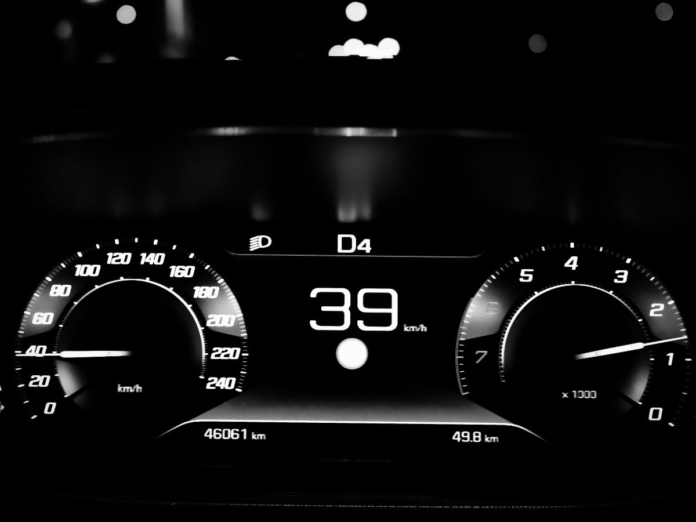
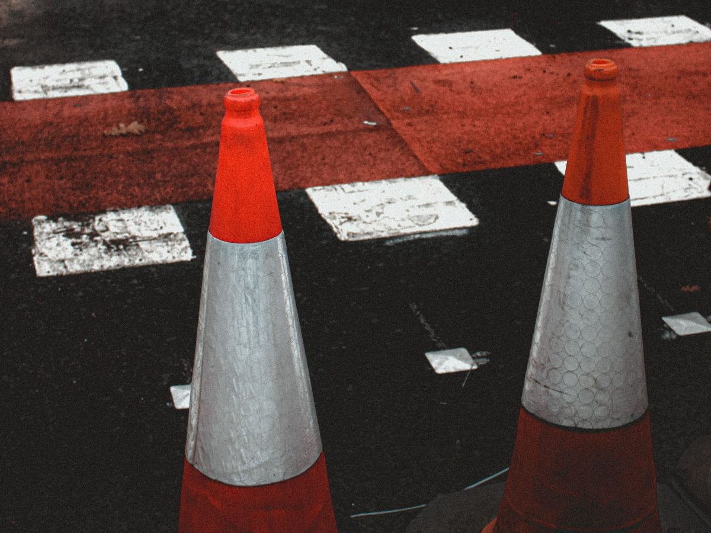
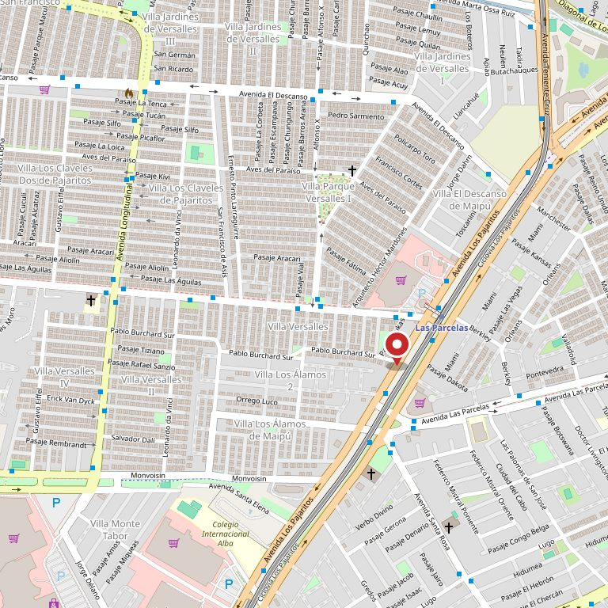

Camino 1
Apruebo
- Se completa el trámite en la municipalidad: foto, huella y firma.
- La licencia clase B queda lista en ___ días hábiles.
- Primera licencia: dura dos años y después se renueva. Conviene saberlo desde ahora.
Maipú · escuela de conductores
Acá sí. El examen no lo toma la escuela: lo toma la Dirección de Tránsito de la municipalidad. Lo que la escuela decide es qué hace contigo el día después, y eso es lo que casi ninguna pone por escrito.
La pregunta que nadie contesta
Es la primera pregunta de todo el que se matricula y la última que aparece escrita en alguna parte. Hay tres caminos posibles y ninguno termina el trámite: en los tres se sigue.
Camino 1
Camino 2
Camino 3
Ninguna escuela puede prometer que apruebes, y la que lo promete está mintiendo. Lo que sí se puede poner por escrito es qué pasa el día después, cuántas sesiones de repaso trae el plan y con qué plazo se vuelve a rendir. Esta página existe para eso. Los espacios marcados con línea de puntos se completan en una llamada: no los inventamos.
Lo que trae el plan
Esta parte está armada como la ve el alumno: qué se hace en cada clase y para qué sirve después. Las cifras las pone la escuela — nosotros no inventamos horas ni precios.
Con quién y en qué
Las dos cosas que más se preguntan por teléfono antes de matricularse, y las dos que no están escritas en ninguna parte. Ponerlas acá ahorra media docena de llamadas por semana.
Instructor · años enseñando · en qué turno
Instructor · años enseñando · en qué turno
Auto de práctica · modelo · con doble comando
No inventamos nombres ni ponemos retratos de banco de fotos: los huecos quedan marcados para que se vea qué falta.
«El dominio es suyo y está pagado hasta 2027.
Lo que se cayó fue lo que había adentro.»
La dirección
Sobre Los Pajaritos. Esta dirección y el horario salen de directorios de terceros, no de una página suya — por eso están acá y no en letra grande: son los primeros dos datos que hay que confirmar antes de publicar.


Estas fotos son de bancos de uso libre y no son de Los 80. Están para que se vea de qué habla la página. Las de verdad las tienen ellos: el auto, la pista y los alumnos de todos los días.
Contacto
Dirección
Av. Los Pajaritos 3492
Maipú
Correo
___@___

Para el dueño de la escuela
escueladeconductoreslos80.cl figura en NIC Chile a nombre de «escuela de conductor LOS 80», creado el 02-05-2020 y vigente hasta el 02-05-2027. NIC todavía publica www.escueladeconductoreslos80.cl como su sitio.
Pero el dominio no resuelve: los dos servidores de nombre que tiene apuntados —ns1 y ns2.dns-premium.net— están encendidos y contestan por otros dominios, pero ya no guardan la zona de éste. O sea: el dominio está al día y el hosting no. Es la parte barata la que falta.
Directorios como practicatest.cl siguen enlazando ese dominio. Cada alumno que llega por ahí hace clic y ve un error, y un error se lee como «cerraron». 393 reseñas con 4,7 no alcanzan a compensar eso, porque la reseña se lee después del clic.
Lo que falta no es comprar nada nuevo: es apuntar el dominio que ya pagaron a una página que exista. Y que esa página conteste lo que el alumno pregunta —qué trae el plan, cuánto dura, qué pasa si repruebo— en vez de ser un folleto.
Demo hecha por CristalWeb · Los datos del dominio salen de la consulta pública de NIC Chile del 11-09-2026 y de resolución DNS contra 8.8.8.8. La dirección y el horario vienen de directorios de terceros y están por confirmar. Lo marcado con línea de puntos son huecos a completar, no datos inventados. Sin precios: los pone la escuela.